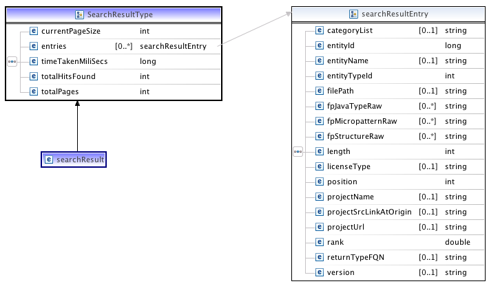

Sourcerer Web-Services
All the artifacts managed and stored in Sourcerer are accessible through a set of Web-services. Currently three services are open to public.
Code Search
This service implements a query processing facility. Client applications (such as CodeGenie) can send queries as combination of terms and fields and the service returns a result set with detailed information on the entities that matched the queries. The query language is based on Lucene's implementation and our extended query parser supports different query forms that allow the clients to express more structural information in the queries.
Repository Access
This service provides access to the code stored in the Managed Repository in Sourcerer. Every entity that is stored in the Sourcerer repository has a unique identifier and this service provides access to the source of the entity given the unique id.
Dependency Slicing
This service provide access to extract dependency slices of entities stored in the repository. Clients can request the slice by specifying an entry point in the program. For example, if the entry point is a method, request for a dependency slice for that method will return a zip file. The zip contains newly fabricated compilation units with much unnecessary code stripped off, as well as include some meta-data detailing any unresolved external references.
These Web-Services have simple REST style APIs. Given a reuest (via a valid URL) the client will get a response back of appropriate format. All requests should be sent via a HTTP GET request with parameters encoded in urls.
Given below are the instructions for how to construct valid requests to the three Sourcerer Web-Services.
Code Search API Description
Search requests can be made by sending a valid URL to the Sourcerer server. Such requests send back XML data that represents the results for the requested query. Search requests have the following form:
http://sourcerer.ics.uci.edu/sourcerer/ws-search/search?qry=[VALID_QUERY]&epp=[INT_VALUE]&pid=[INT_VALUE]&client=[CLIENTID]
The text inside the brackets above indicate parameters that need to be filled in. The list below summarizes the parameters in the above URL
- qry: A valid lucene query experssion. (Refer to a list below to see available fields). By default a conjunction (logical and) of all terms is considered.
- epp: Number of entries to display (results) per page.
- pid: Page index of the search result.
- client: Client type. For example: "codegenie" or "webapp". This is for tracking purposes only, and does not affect search result.
Here is how a valid url looks like:
http://sourcerer.ics.uci.edu/sourcerer/ws-search/search?qry=sort&epp=10&pid=1&client=webclient
Search Results
You can copy and paste the above url in a browser to see the result returned by the search sevice. The XML represenation of the search results returned by the service follows the following schema as shown below.
Index Fields
Please refer to these available index fields to see what index field names you can use while constructing a query. Please refer this link to learn how to construct a valid lucene query.

Dependency (Program) Slicing API Description
The URL request for dependency slicing has the following form:
http://sourcerer.ics.uci.edu/sourcerer/slicer/slice?eid=[ENTITY_ID]&client=[CLIENT_ID]
Values in the brackets above indicates required parameters. Here is how a valid url looks like:
http://sourcerer.ics.uci.edu/sourcerer/slicer/slice?eid=3148295&client=webapp
This service works well after retrieving search results from the code query service. Each result entry has a field that provides the entity id of the entity that the entry represents. Using that value in the slice request sends back a zip with sliced dependencies for that entity.
File Server API Description
The File Server or the repository access service provides access to all the source code in the Sourcerer repository. The URL has the following form:
http://sourcerer.ics.uci.edu/sourcerer/repodata/resource?rp=[RELATVE_RESOURCE_PATH]&client=[CLIENT_ID]
The parameter 'rp' denotes the relative path of the resource in the Sourcerer repository. For any entity this information is available in the search result entry. Parameter 'client' has the same purpose and as described in previous services. Here is how a valid url looks like:
http://sourcerer.ics.uci.edu/sourcerer/repodata/resource?rp=8/454/src/delivery/java/org/stringtree/util/sort/Sorter.java&client=webapp
Java Library
We have implemented a Java library that makes it easy to program the Sourcerer search service. Using this library will take away the overhead of unmarshalling the XML data returned by the search service. Here is how you could import it in an IDE (Eclipse) and start programming with the sourcerer search service.

Please email the contact below if you want to obtain this library.
Programming
It is quite simple to program the search service using the library mentioned above. You open a HTTP input stream with a valid URL, and, give it to the SearchResultUnMarshaller class; that will give you a SearchResult instance holding SearchResultEntry instances. This is how it could look like:

Make sure you have all the HTTP parameters correct while creating the URL if you do not get the results you expect.
Contact
Please contact Sushil Bajracharya () if you intend to use Sourcerer Web-Services. Thank You!